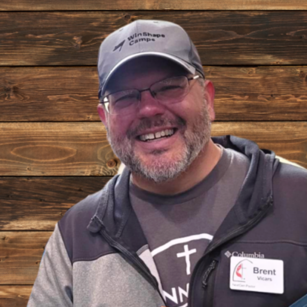

Meet Our Staff
Meet the team that serves Kennesaw Church.
REV. ALEX STROUD
Senior Pastor
Pastor Alex has worshiped and served at Kennesaw Church since 2019 as Senior Pastor. He enjoys the opportunities to preach, teach, and lead our congregation and loves any opportunity to spend quality time with God's people the most. Alex has been serving in ministry since 2002 and holds degrees from LaGrange College (B.S.), Emory University (M.Div), and Kennesaw State University (MBA).
Originally from Hahira, Georgia, Alex now lives in Acworth with his wife, three kids, and their dog. When he's not serving with the church, he's woodworking, fishing, playing golf, or spending time with family and friends. He also has a weakness for hot Krispy Kreme donuts.
BETH SERIO
Executive Administrative Assistant
Beth has been an Administrative Assistant at Kennesaw Church since 2018. She enjoys serving the congregation and values the connections she has made with its members. Prior to this role, Beth worked as a teacher at KMCA.
Originally from Ohio, Beth now lives in Kennesaw with her husband. They have two grown sons and a lovable dog. In her free time, Beth enjoys spending time with friends, reading, and participating in 5K runs.
SARAH NAVARRO
Director of Children's Ministry
Sarah has been serving as the Director of Children's Ministry at Kennesaw Church since 2024. She enjoys spending time teaching our next generation about the love of Jesus, getting to know our families, and encouraging our students to be curious and ask questions.
Georgia born and raised, Sarah currently resides in Kennesaw, GA. She is newly engaged and planning a wedding. In her free time you can find her reading, crafting, or trying a new recipe.
MARIANNE HARLAN
Business Administrator
Marianne felt called into ministry in 1996 at a United Methodist church in North Augusta, South Carolina, and has served in a variety of roles ever since. Throughout her journey, she has trusted God to guide and equip her, striving to meet each responsibility with professionalism and excellence. In January 2023, she stepped into an administrative leadership role at Kennesaw Church, where she quickly found a true sense of belonging.
Marianne is the proud mother of three children and grandmother of three, and she cherishes the rare and special moments when her entire family can gather under one roof. In her free time, she enjoys reading, coloring, and embracing her Italian heritage by making and savoring homemade pasta.

REV. BRENT VICARS
NextGen Pastor, Director of Modern Worship
Brent has been serving and worshipping at Kennesaw Church since 2021 as the Next Gen Pastor and Modern Worship Leader. He loves working with youth, young adults, and the worship team to help them grow closer to God and use their talents for the Kingdom.
When he is not at church, he loves working on Jeeps, hiking, traveling with his family, and playing music in various bands in the area. He lives in Canton, Georgia with his wife and two kids. The congregation will tell you that he has a great affection for llamas, however this is a widely reported falsehood.